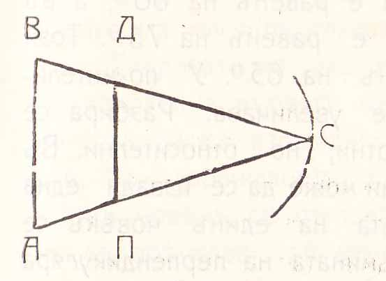

Беседа 844 от 3877 · Беинса Дуно
Отличителните черти на човешката интелигентност
Размишление
Бе прочетено резюме от темите Разлика между будизъм и християнство.
Бяха прочетени три работи върху темата Отличителните органически и морални качества на бялата и жълтата раса.

Вторият начин за измерване на интелигентността е според ъгъла на Кампер13. Този ъгъл ВСА е около 30°. Кампер спуща един отвес от челото до брадата и друга една линия, която минава през средата на ухото до долната част на носа. Този ъгъл, който се образува между тия две линии, в хората на бялата раса е равен на 80°, а в хората от жълтата раса е 75°. Този ъгъл у малайците е равен на 63°. У по-интелигентните хора ъгълът се увеличава. Разбира се, тия величини не са абсолютни, но относителни. В това отношение от тия линии може да се извади една пропорция. Интелигентността на един човек се определя не само от големината на перпендикуляра АВ, но същевременно и от дължината на линията АС. Тази линия определя интензивността на човешкия нос.
Ако линията АВ представлява големината на носа и линията АС е по-къса, тогава интелигентността не е толкова интензивна. Тъй че линиите АВ и АС определят интелигентността на един човек. Разбира се, тия линии са живи. Ние не говорим за мъртви линии. Когато говорим за ъгли, с които се измерва човешката интелигентност, имаме предвид тия ъгли, които се увеличават, и следователно те всякога могат да се измерват. Ако измервате постоянно вашата глава, ще видите, че главата ви ту се увеличава, ту се смалява. Тя не е постоянна. Това зависи от разположението на човека. Например ако у вас се зароди някоя възвишена мисъл или разрешите някой важен философски въпрос, главата ви ще се разшири. Като я измерите, ще видите, че има едно разширение на главата ви най-малко с 1/10 част от милиметъра, а понякога дори с 1/2 милиметър. Ако у вас се зароди мисълта, че не трябва да мислите, главата ви се смалява.
Следователно ако мислите на хората в няколко поколения вървят в низходяща степен, те започват да се израждат. Израждането става отвътре. При израждането се забелязва промяна в носа. Щом човек се отклони от правия път, носът му се пречупва, той вече не е спуснат перпендикулярно надолу.
Челюстите му започват да изпъкват навън, както у животните. Носът същевременно изгубва и своята дължина. Обаче не всякога дължината на носа определя интелигентността на човека. Тя зависи още и от перпендикуляра, който е спуснат от челото до брадата. Следователно когато човек не живее нормално, челюстите му започват да се издават напред, брадата му се пречупва и скъсява, докато най-после съвсем се изгуби. Челото пък ляга назад, скулите изпъкват и тогава човек започва да прилича на животно. Разликата между човека и животните е тази, че животните нямат голям нос, нямат брада и чело.
Челото им е слабо развито. У тях е силно развит обективният ум. У тях има наблюдение, но няма философска мисъл. Те не могат да разсъждават. Те имат интуиция. От дългата си опитност те са извадили известни изводи за нещата, но не могат да разсъждават. Ако турите пред някое животно един триъгълник, то никога не ще може да разбере какво отношение имат трите страни една към друга.
Сега, разбира се, учените антрополози са се спрели само на външната страна на науката, но туй още не е цялата наука. Това са само външни скици. При това учените дълго време са претегляли мозъците на хората, дълго време са мислили върху това, че колкото мозъкът е по-тежък, толкова и човекът е по-интелигентен. Обаче те са намерили хора с големи мозъци, които не са толкова интелигентни. Френолозите пък са забелязали, че интелигентността не зависи от обема на мозъка, но от развитието на предния мозък в главата. Колкото предният лоб е по-голям, толкова и човек е по-интелигентен. Те са установили още, че моралните чувства у човека са поставени в особена област на мозъка; интелектуалните способности пък са поставени в друга област.
Тъй щото мозъкът е разпределен на особени области, при което във всяка от тях има особена способност. Тия учени са доказали с ред наблюдения своята френология, която днес не е приета от официалната наука. Френолозите са изучили вътрешността на мозъка, развитието на сивото вещество и на белите нишки, но все-таки липсва още нещо на френологията. Те са дошли до едно място и там са се спрели – не могат да идат по-далече. Единственият най-учен човек между тях е бил Гал14. След Гал никой не е имал тази наблюдателност. Всички, които са дошли след него, не са имали този обобщаващ ум. Ето защо френологията в туй отношение се е спряла на една фаза. Американците и англичаните са развили френологията в нейното практическо приложение и там са се спрели.
За нас е важно, че всяка мисъл има известно влияние върху предната част на челото, а всяка морална мисъл упражнява влияние върху горната част на главата. Семейните чувства пък упражняват влияние върху задната част на черепа. По някой път, когато вие се разгневите, тия самосъхранителни емоции упражняват влияние върху разширението на черепа към ушите. Следователно моралните чувства повдигат главата нагоре, умствените способности развиват главата отпред, домашните способности – отзад, самосъхранителните я развиват на широчина, а личните чувства образуват една малка кривина отзад. Ако по някой път се сърдите, гневите, този гняв е потребен като пипера в яденето, за да даде активност или широчина на главата. Без тази широчина човек не може да има подтик за дейност. Когато някои от вас се гневят, да не мислят, че тази енергия е непотребна. Вие трябва да владеете, да пазите този гняв.
Той е барут, който ще използвате, когато трябва, а не да го горите, когато не трябва. Вие се гневите, когато не трябва. Аз бих ви казал кога да се гневите. Когато видиш една мечка, разгневи се! А вие се разгневявате, когато видите една мравя, и я стъпквате. Тук гневът няма място. Не, разгневете се при мечката! Когато срещнете на пътя си някой голям камък, прехвърлете го настрана. Проявете своя гняв като един волеви акт.
Следователно, когато гневът дойде у вас, приемете го, не се стремете да го спрете. Или пък идете на Витоша и там се заемете да премествате камъни от едно място на друго. Втори път като се разгневите, идете при някое голямо дърво и се опитайте, можете ли да го извадите от земята. Не казвам да хванете някои малки клончета, защото те изхабяват енергията ви, т.е. тия сили, които Природата е вложила във вас. Значи гневът може да се използва в много отношения. Разгневите ли се, направете някое добро – не обикновено добро, а такова, каквото никой не може да направи. Разбира се, тази енергия за самосъхранително чувство засега ни е нужна. Личните чувства у човека трябва да се впрегнат на работа. Съвременната, бялата раса е подпушила у хората енергията около ушите им. Там е всичкото зло, че наместо да я тури на работа в моралния свят, тя сега ще отваря войни, да се бият едни с други, та по такъв начин да си създадат условия за правене на добро. Например англичаните, като хванат 10 000 души българи, ранени и болни, ще ги лекуват, за да образуват известна връзка и да покажат кой е по-добър. Англичаните искат по този начин да се прославят. Тия българи, като се върнат в отечеството си, ще разправят, че англичаните са постъпили с тях много добре, че са високо хуманни и благородни хора. Така се създават изкуствено отношения. Затуй се появяват войните. Тази енергия, натрупана в бялата раса, трябваше ли да се изразходва в една безполезна война? И в религиозно отношение те се подпушиха, не дадоха подем на своите чувства.
Казвам сега: шестата раса, която иде, ще отпуши този голям кран, ще даде материал напред-назад, в широчина и в дълбочина, за да може човек да се развива симетрично и правилно във всички направления. Следователно в този човек ще има стремеж към Бога или реализиране на висшия идеал на неговия дух. Самият този израз „висшият идеал на човешкия дух“ е неразбран. Накъде е този висш идеал? Като кажем „висш идеал“, какво разбираме? Често казваме „висок идеал“. Аз съм употребил израза „висок идеал“, като давам пример за висок идеал: че ако искаш да си хапнеш един плод, трябва да се качиш на дървото и сам да си откъснеш най-хубавия плод. Добре, ако ти имаш в своята градина най-хубавите плодове и дойдат в тази градина деца с висок идеал, и всяко от тях реализира своя идеал от твоите дървета, туй ще бъде ли идеал и за тебе? – Не, как ще погледнеш на това? Човекът от бялата раса ще вземе една тояга и ще наложи тия идеалисти на общо основание. Той ще каже на тия философи още веднъж да не се качват. Човекът от шестата раса пък ще похвали тия деца и ще им каже: „Елате и догодина в моята градина. Тя е свободна, открита за вас.“ Той няма да има забрани.
И тогава ето какво ще бъде през времето на шестата раса. Засега само някои хора имат градина, а за в бъдеще цялата Земя ще бъде превърната в градини.
Всеки ще ходи свободно из тях и което дърво си хареса, от него ще си откъсне. А сега, ако влезеш в градината на човек от петата раса, ще намериш затвора. Туй е подпушване на енергията. Разликата между хората от шестата и тази от петата раса е тази, че човекът от шестата раса ще се качи на дървото, ще си откъсне само един най-хубав плод и ще слезе, а този от петата раса ще си напълни една торба с плодове. Единственото нещо, което спъва сегашната раса, това е голямата лакомия във всяко отношение. Забележете, всяка есен се събира с милиони тонове жито и го складират. Защо им е този запас? После, събрали пари в банките и ги пазят. Навсякъде всичко събират на купове и го пазят. Приготвят консерви с милиони тонове и ги пазят. Те се развалят най-после и ги хвърлят. Съвременните хора са като мравките: постоянно събират и трупат на едно място – да се осигурят. Това е бялата раса – хора интелигентни, но крайно лакоми. Колкото европеецът е активен, толкова китаецът е инертен. Той работи по необходимост. Казват, че китаецът е много трудолюбив. Как няма да бъде трудолюбив? – Природата знае неговото естество и го е турила при такива условия, при които ще може да се развива.
Сега, в шестата раса, която ще дойде, няма да има лакомство. Всеки от вас може да стане човек от шестата раса. Как именно? – Като превърне лакомството в една движеща сила. Да допуснем, че някои богати хора в Америка, които имат в банките си милиарди левове, търсят начин да се освободят от богатството си. Какво трябва да направят? Да раздадат парите си? – Не, това ще предизвика подпушване на известна енергия. Това не е правилно разрешение на въпроса. В раздаването на парите има една опасност. С тях се събужда лакомство и тия хора, на които са раздадени пари, се спъват. В такъв случай сиромашията е за предпочитане. Ако сиромашията може да ни отвикне от лакомството, тя е за предпочитане. Какво разбирате под думата лакомство? – Туряне в стомаха повече, отколкото той може да асимилира; туряне на гърба повече, отколкото може да носи; заемане с работи, които не са по силите ни: например в училището изучаваме предмети, които не са по силите ни; учим много предмети, от които нямаме нужда, и бързаме, не чакаме да дойде времето, искаме да знаем много.
Съществената разлика значи между бялата и шестата раса е главно тази, че в шестата раса няма да има лакомия. Земята няма да има никакви граници, никакви прегради, няма да има наказателни закони, няма да има затвори и т.н. Ако някой се провини, ако направи някаква погрешка, ще му дадат да яде само жито и царевица. Хубавото в шестата раса ще бъде още и това, че хората ще имат доверие едни към други. В бялата раса хората нямат помежду си доверие. Те имат вярване, но доверие нямат. Имат го само на думи. В шестата раса обаче доверието ще бъде една от благородните черти – пълно доверие.
Сега в която и къща и да влезеш, като излезеш из стаята на някого, той веднага ще отиде да провери дали се е изгубило нещо. Или пък ако вървиш с жената на някого, той ще прати подире ви да ви следят какви ще бъдат вашите отношения. В шестата раса за тези неща и въпрос няма да става – те ще имат вяра. Там всеки сам ще се пази. Няма да ходят детективи да следят хората отвънка, защото всеки ще пази себе си отвътре. После, в шестата раса хората ще имат една характерна черта, а именно: като срещнеш един човек от тази раса, той ще внесе в тебе едно разширение на сърцето, едно просветление на ума – и ще се вдъхновиш от един велик идеал. Той може да не ти говори нищо, но ще се вдъхновиш от нещо възвишено и благородно. Само като го срещнеш, той ще ти предаде своята мисъл, без да ти говори нещо. И между хората от бялата раса по някой път се случва това, но по-рядко. Между белите всеки се затваря в себе си, всеки се пази. Действително, човек трябва да се пази, но понеже знанието, което той има в себе си, е нещо живо, нещо, което създава изобилие, то трябва да излезе навън. Затуй именно казваме, че в шестата раса ще има едно разширение.
Сега например между мъжете и жените се повдига въпросът за правата – жените искат да извоюват своите права чрез насилие. Казват: „Ако човек се слага, никога няма да добие нужното за себе си.“ – Не, подпушване не трябва да има. Не подпушвайте никого! Човек не трябва да подпушва и себе си. Законът е такъв. Щом мислиш, че съседът ти те подпушва, ти сам си се подпушил. Щом мислиш, че детето те подпушва, ти си подпушен вече. Щом мислиш, че жената ти или мъжът ти те подпушват – това става. Защо? – Защото ти сам си се подпушил. Каквото вярваш, така става. Подпушват се обаче само грубите енергии; фините, тънките енергии не могат да се подпушат, те проникват през всичко. Следователно, ако ние имаме онзи велик вътрешен стремеж на духа, никой не може да ни подпуши.
Допуснете сега, че някой от вас има туй изкуство – да се преобразява или да прониква през стените. Кой ще може да го ограничи? Ако една майка има туй качество, могат ли да я ограничат нейните деца? Да допуснем, че децата ѝ, като станат сутрин, започват да я хокат, но тя още пред тях веднага изчезва.
Какво ще направят те? – Нищо. Тя им дава такова страшно възпитание, каквото те не са виждали в живота си. Туй изгубване не е нищо друго освен разширение. Пък всички вие тук, както и всички хора в света, сте подпушени. И благодарение на тази подпушеност имаме такива груби тела. Така сме свързани ние с материята, че не можем лесно да се развържем. Вие казвате: „Какво да се прави, човек трябва да се храни, трябва да се облича, да работи, туй да направи, онуй да направи.“ – Да, всичко това трябва да се направи, защото сте подпушени. В това отношение именно всяка раса има свои вярвания, своя наука, своя религия, за да се освободи от ония връзки, създадени от миналото. Туй са методи на възпитание, с които човек трябва да си въздейства. При сегашните условия не е тъй леко човек да се лекува. Той трябва да разбира този закон на развързване. Не е лесно например да отхвърлим едно внушение, едно хипнотизиране, че след десет дена ще умрем. Трябва да разбираш законите как да се разхипнотизираш. Например у някого ще се роди мисълта, желанието да скара двама души. Защо? – Вижда, че двама приятели си живеят добре, работят заедно, и у него се заражда завист. Той им внушава мисълта, че те скоро ще се скарат. И наистина, един ден виждаш тия двама приятели скарани, защото трети някой им е внушил да се скарат. Затуй в скарването на двама души винаги има намесен трети. Двама души, сами по себе си, не могат да се скарат. Този закон се проверява навсякъде в живота.
Така стана и с Адам и Ева. Третият, който влезе между тях, ги скара – нищо повече. Сега ще знаете: щом се яви у вас желание да се скарате, ще обърнете внимание на това, че има някой трети, който ви тласка към скарване. Туй не го вършат духове, а вие, хората, го вършите. Например двама се обичат, но дойде между тях трети, намеси се и извади едного от тях. Туй го има между ученичките и учениците, между старите и децата, както и между приятели. Казват: „Клин клин избива.“
И тъй, ако искате да знаете каква ще бъде шестата раса, вие трябва да влезете в нея вече. Отсега трябва да се приготовлявате, за да придобиете от нея тия по-висши качества. Ако не придобиете тия нови форми, няма да ви дадат дрехите на шестата раса. Ще кажете: „Като хора от бялата раса пак ще можем да влезем в Царството Божие.“ – Да, и така ще можете да влезете, но за предпочитане е човек да влезе в Божия свят като същество, което може да се ползва от висшите Божии блага. Колцина от вас, които ме слушате тази вечер, можете да се ползвате от висшите Божии блага? Вие вярвате, но всъщност имате ли една жива опитност, за която, ако ви хванат тази вечер, сте готови идейно да устоявате на всички мъчнотии и изпитания? Ако ви хванат и ви запитат: „Вярвате ли в своите убеждения?“, вие ще започнете да се колебаете. Не казвам за всички, но за някои само, защото нямате жива опитност. Ако един човек има опитност, той ще е готов да изтърпи всички страдания. Тъй щото вие трябва да се стремите към този възвишен идеал – да дойдете в съприкосновение с шестата раса. Тя съществува вече. Смешно е, когато някои хора казват, че шестата раса щяла да се зароди от бялата. Не, всички светии, които са завършили своята еволюция, доброволно ще дойдат на Земята, ще създадат свой тип. Тази раса ще се нарече „раса на Любовта“. Бялата раса е „раса на интелекта“, а шестата – „раса на Любовта“. Хората от шестата раса ще имат по-висша интелигентност, отколкото белите. При това ще имат и едно сърце, несравнено по-благородно, отколкото сърцето на един човек от бялата раса. Когато вашата душа се освободи от тази форма, в която сега се намирате, ще можете втори път да влезе във форма от шестата раса. Това са живи форми.
Сега основното положение, което трябва да запомните, е, че всяка мисъл упражнява известно влияние върху мозъка на вашия череп. Ако мислите интензивно, умът ще влияе върху челото; ако ставате духовен, това упражнява влияние върху коронната част на главата; ако развивате вашите семейни чувства, развива се главата ви отзад; ако ставате активен, главата ви при ушите става по-широка. Тъй щото всичката енергия, която човек проявява, има своето определено място у човека. При това развитието на мозъка се отразява върху тялото. Тялото се строи съобразно мозъчното развитие. Досега главата е била създавана според тялото. В шестата раса тялото ще бъде създадено съобразно мозъка. Мозъкът е най-устойчивото вещество – от неговата същина се губи много малко.
Следователно тялото ще бъде създадено съобразно мозъка, ще има правилни математически отношения. Няма да има такива дефекти, каквито сега съществуват.
Всички трябва да живеете с вяра, че това е необходимо за вас, и да се приготовлявате за шестата раса. Вие ще попитате: „Дали ще доживеем това време?“
– Ще го доживеете, ще го видите, разбира се, но не с това съзнание, което имате сега, а с друго, разширено съзнание. Едно време бяхте деца, нали? Сега сте възрастни. И в човечеството има степени в съзнанието. Човечеството по съзнание първо е било като дете, но после се е развило. Значи и тук съществуват същите отношения. Съзнанието ви в човечеството расте, разширява се и се развива. Сега човекът е достигнал до едно по-високо положение, но още не е пълновъзрастен. Цялото човечество днес е в положението на един младеж на около 15-16 години. Както виждате, още сте много млади. В миналото, когато е бил създаван Мойсеевият закон, хората са били деца, затуй е трябвало малка пръчица, която да ги подканя. Сега вече хората са на 15-16-годишна възраст. Тъй щото в туй отношение всинца сте младежи. До пълнолетието, до 21-годишна възраст, ви трябват още пет години. Човек ще се развие в шестата раса – там ще достигне до 21 години. В седмата раса ще бъде на 33 години – там ще свърши всичко, т.е. няма да свърши, но ще започне отново. Сега трябва да се радвате, че сте млади, на 15-16-годишна възраст. Че сте млади, това е най-радостното за вас, защото младият има бъдеще.
Сега ще ви дам следния лозунг, следното мото:
Доброта, Истина, красота – това е Любовта.
Двадесета лекция на ООК ІV година
25 февруари 1925 г.